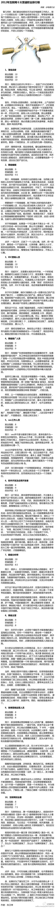

哎我去，每次去k滴时候，我都会唱那首歌，不唱也会点来听，我想大声告诉你～～～//@肉山大魔王zZ:回复@樊凡:哈哈哈 你也这么觉得是不？ //@樊凡:[江南style]@害羞的肉山:分享图片 翻到一张去年参加活动时跟@樊凡 合影一张，我妈说我俩很有夫妻相，大家随时感受一下
妈呀，头三个都干过，按照博主的说法，我果然是最苦逼的！@电商行业:【2012年互联网十大苦逼职业】①淘宝店家；②网络编辑；③IDC营销人员；④网络推广人员；⑤seo工作人员；⑥软件开发及应用开发者；⑦数据分析师；⑧网络主管；⑨微博营销运营人员；⑩互联网创业者！你中几枪？ 